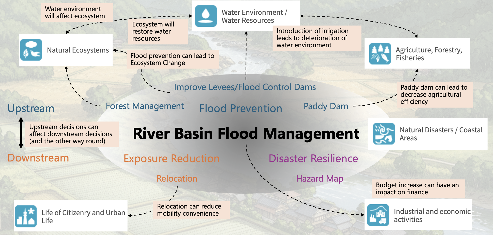

How can models help us build a more rational long-term future? Cross-sectoral integrated modeling, visualization of uncertain futures, and human-model interaction—climate change adaptation is the field where we pursue this question.
Our focus is on methods for using models to build a more rational world over the medium to long term. We believe climate change adaptation offers the greatest opportunity for this pursuit.
Models can say something when applied to individual measures in isolation—but they can only model what can be isolated. Climate impacts span multiple sectors—agriculture, disaster prevention, water resources, urban life—and an optimal solution in one sector can become a side effect in another. Future climate and socioeconomic conditions are both uncertain.
This is why we need integrated cross-sectoral modeling that embraces uncertainty, visualization of uncertain futures, and meaningful human-model interaction. Furthermore, we must also address how people make these decisions—the design of rules and governance.
Developing models to realize this vision is what we truly want to do, and what we believe to be the essence of climate change adaptation.
While adaptation planning has progressed in many municipalities, significant challenges remain in the practical examination and implementation of measures.
Adaptation measures tend to be planned sector by sector, making it difficult to account for cross-sectoral interactions among disaster prevention, agriculture, water resources, ecosystems, and urban life. Administrative organizations and policy frameworks are often sector-based, creating a structure prone to siloed planning.
Future climate, population, industry, and fiscal conditions are all uncertain, limiting the effectiveness of current evaluation criteria for long-term planning. This project addresses these challenges by visualizing cross-sectoral interactions and building a platform for stakeholders to collaboratively design adaptation pathways under uncertainty.
The academic challenge of this project lies in treating climate change adaptation as a dynamic decision-making problem spanning multiple sectors, stakeholders, and time horizons—not merely sector-specific optimization. Existing research has contributed to risk interconnections, synergies and trade-offs, participatory modeling, and game-theoretic analysis individually, but in practice these elements cannot be separated.
This project constructs an integrated framework connecting cross-sectoral modeling, adaptation pathway design under uncertainty, participatory decision support, and cooperative mechanism design. In particular, the following points represent key academic challenges:
By addressing these challenges in an integrated manner, this project constructs a novel research framework connecting cross-sectoral modeling, adaptation pathway design under uncertainty, participatory decision support, and cooperative mechanism design for climate change adaptation.

複数の分野をまたぐ「流域治水」を事例として取り上げて研究していますRiver Basin Flood Management spanning multiple sectors (as a case study)
This project positions WG1 (Integrated System Modeling), WG2 (Participatory Workshop & Decision Support), and WG3 (Collaborative Mechanism Design) not as independent research themes but as interconnected research processes.
WG1
分野横断の相互作用をモデル化し、未来の選択肢をつくる
Modeling Cross-sectoral Interactions to Create Future Options
Models mutual impacts of measures across diverse sectors—disaster prevention, agriculture, water resources, ecosystems, health, and urban life—to generate adaptation pathway candidates considering multiple objectives and uncertainty.
Transforms WG1's models into interactive GUIs, tangible UIs, and serious games, analyzing processes of understanding, dialogue, consensus-building, and learning through workshops with citizens, students, and government officials.
Theorizing Differences in Positions and Difficulties of Cooperation to Enhance Effectiveness
複数主体の意思決定を、目的・信念・情報の違いを含むゲームとして定式化し、ナッシュ均衡やPrice of Anarchyの分析を通じて、協力が成立する条件や制度設計の原理を明らかにします。
Formulates multi-stakeholder decision-making as games incorporating differences in objectives, beliefs, and information, revealing conditions for cooperation and principles of institutional design through Nash equilibrium and Price of Anarchy analysis.
Transforms WG1's cross-sectoral models and scenarios into interactive GUIs, tangible UIs, and serious games, creating platforms for dialogue and learning through workshops with diverse stakeholders.
Implements WG3's theoretical insights—payoff structures prone to cooperation failure, choice divergences from stakeholder differences—into serious games and workshops to verify how theory manifests in actual decision-making.
Participant behavioral data, utterances, and survey results from WG2 are fed back to improve WG1's model structure and to develop WG3's game-theoretic models into more realistic consensus-building mechanisms.
Integrates WG1's cross-sectoral models, WG3's cooperative mechanism analysis, and WG2's workshop design into an adaptation support platform for municipalities, citizens, and educational institutions—visualizing options, trade-offs, and stakeholder differences to support collaborative deliberation and learning.
For details on research outputs and presentations, please see the Publications page.
2026年6月Jun 2026論文PaperEnvironmental Research Communications 誌に "From silos to coordination: a multi-method systems engineering framework for cross-sector climate adaptation" が掲載されました。[Link]"From silos to coordination: a multi-method systems engineering framework for cross-sector climate adaptation" was published in Environmental Research Communications. [Link]
2026年5月May 2026企画展示Exhibition東京大学五月祭にて、モデルベースワークショップ・シミュレーションゲームに関する企画展示を行いました。Held an exhibition on model-based workshops and simulation games at the University of Tokyo May Festival.
2025年12月Dec 2025ポスター発表Poster令和7年度気候変動適応の研究会研究発表会・分科会にて「領域横断影響を踏まえた協調的気候変動適応支援ツールの開発」を発表しました。Presented "Development of a Collaborative Climate Change Adaptation Support Tool Considering Cross-sectoral Impacts" at the FY2025 Climate Change Adaptation Research Meeting.
2025年11月Nov 2025国際学会Conference12th Annual Meeting of the Society for Decision Making under Deep Uncertaintyにて "Development of a Collaborative Decision Support Tool for Climate Change Adaptation under Deep Uncertainty" を発表しました。Presented "Development of a Collaborative Decision Support Tool for Climate Change Adaptation under Deep Uncertainty" at the 12th Annual Meeting of the Society for Decision Making under Deep Uncertainty.
2025年11月Nov 2025国内学会Conference計測自動制御学会システム・情報部門学術講演会（SSI2025）にて、本プロジェクトに関する2件の発表を行いました。Two presentations related to this project were given at the SICE System and Information Division Academic Lecture Meeting (SSI2025).
2025年10月Oct 2025国際ワークショップWorkshop8th Adaptation Futures Conference（Christchurch）にて、流域治水の合意形成に関するワークショップを実施しました。Conducted a workshop on consensus building for watershed flood management at the 8th Adaptation Futures Conference (Christchurch).
2025年7月Jul 2025論文PaperAdvances in Transdisciplinary Engineering 誌に WG1・WG2 に関する2本の論文が掲載されました。Two papers related to WG1 and WG2 were published in Advances in Transdisciplinary Engineering.
2025年5月May 2025企画展示Exhibition東京大学五月祭にて、モデルベースワークショップ・シミュレーションゲームに関する企画展示を行いました。Held an exhibition on model-based workshops and simulation games at the University of Tokyo May Festival.
2024年11月Nov 2024国際学会Conference11th Annual Meeting of the Society for Decision Making under Deep Uncertaintyにて "Modeling Inter-sectoral Climate Change Adaptation and Cooperation and Consensus Building Mechanism" を発表しました。Presented "Modeling Inter-sectoral Climate Change Adaptation and Cooperation and Consensus Building Mechanism" at the 11th Annual Meeting of the Society for Decision Making under Deep Uncertainty.